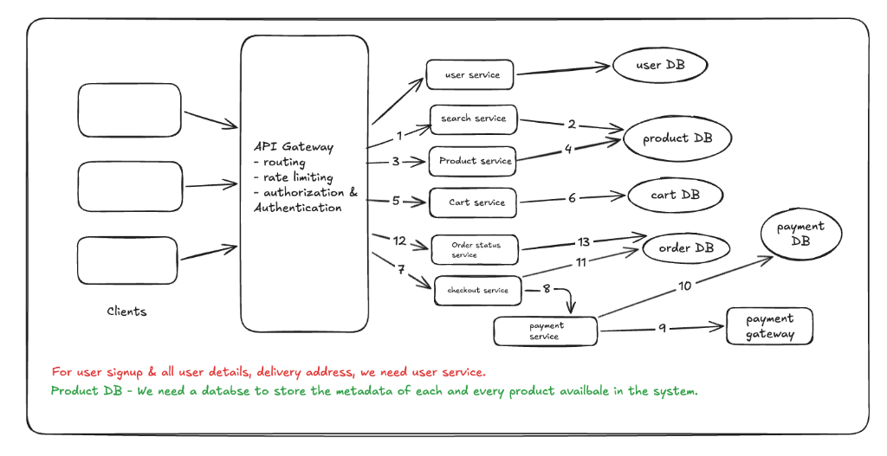
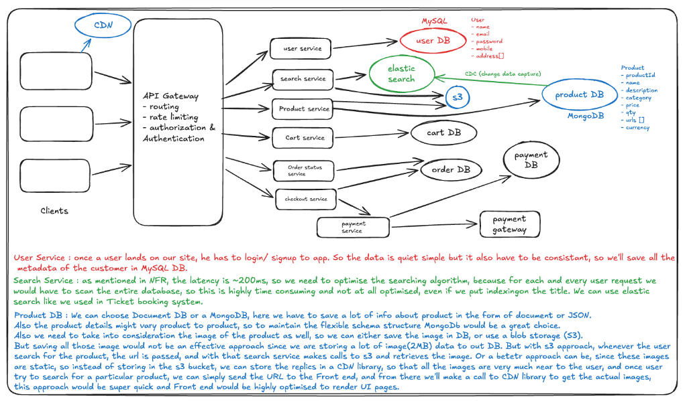
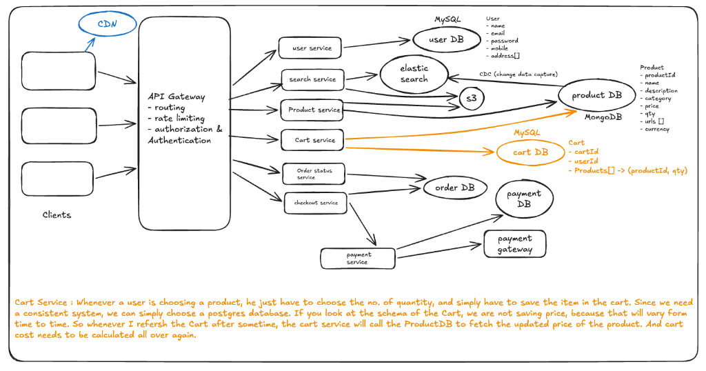
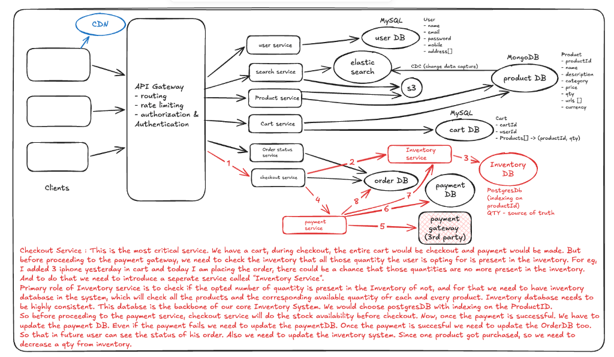
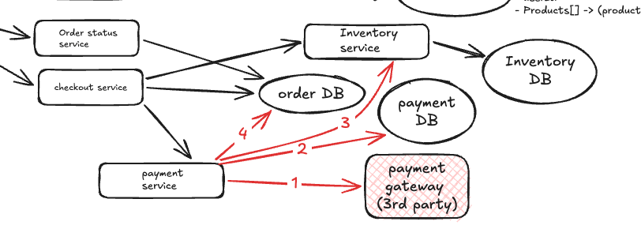
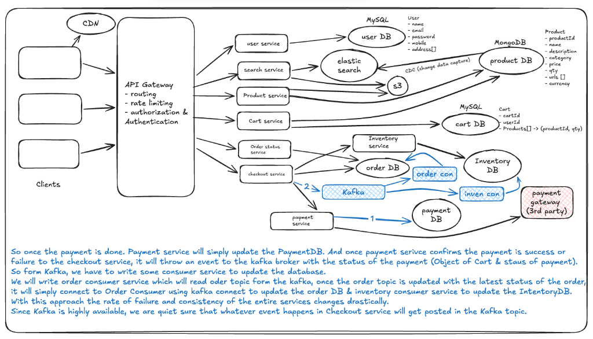
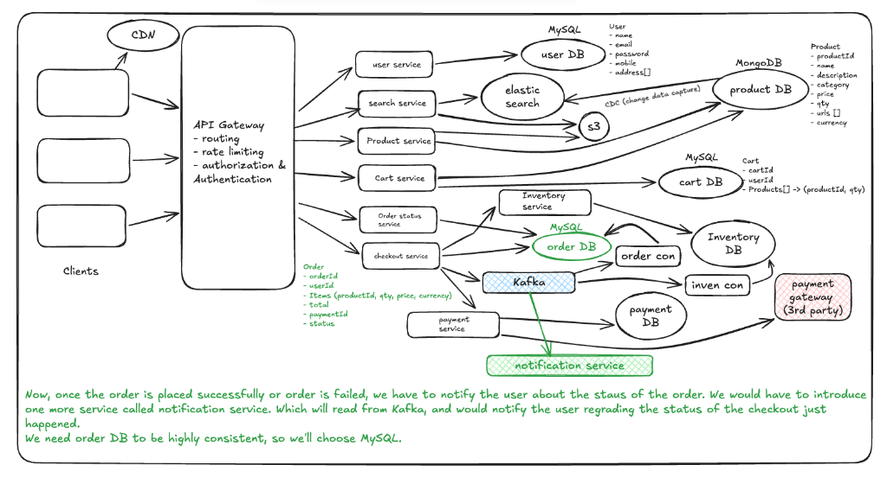

Clarification Note
Important: Before diving into the design, always clarify with the recruiter: "Are we designing the Warehouse/Seller Flow (inventory management, logistics) or the User Flow (shopping, search, checkout)?"
Functional Requirements
- Search: User should be able to search and find products based on product title or names.
- Product Details: User should be able to view details (description, image, availability, quantity, reviews).
- Cart Management: User should be able to select the quantity and move items to the cart.
- Checkout & Payment: User should be able to make the payment and complete the checkout process.
- Order Tracking: User should be able to check the current status of their order.
- Limited Stock Management: Efficiently manage purchases of items with limited stock (e.g., iPhone flash sales).
Non-Functional Requirements
- Scale: 10 million Monthly Active Users (MAU) and 10 orders/second.
- CAP Theorem: Highly available for searching and viewing items; highly consistent for placing orders and payment.
- Latency: ~200ms while searching the product.
Core Entities
- User: Represents customers, includes profile and authentication data.
- Product: Metadata such as title, description, price, images, inventory count, and reviews.
- Cart: Holds selected product IDs with quantities for a user before checkout.
- Order: Captures finalized purchase details, status, payment reference, and shipping information.
- Checkout: Orchestrates validation of cart, payment processing, inventory deduction, and order creation.
API Design
- Search Product:
GET /v1/product/search?q={searchTerm}→ Returns a paginatedListbased on title or name. - View Product Details:
GET /v1/product/{productId}→ Returns full product details (JSON) such as description, image, etc. - Add to Cart:
POST /v1/cart/add→ Body:{ productId, quantity }| Header:userId| Returns:cartId. - Checkout:
POST /v1/checkout→ Body:{ all productIds with qty & price }→ Returns:orderId. - Payment:
POST /v1/payment→ Body:{ orderId, paymentDetails }→ Returns:confirmation. - Check Order Status:
GET /v1/status/{orderId}→ Returns the current status of the order.
Note: Additional operations like "Update Cart" or "Delete Item from Cart" are minor and can be discussed verbally to save time.
High-Level System Design

- User Service: Needed for user signup, delivery addresses, and all user-related profile details.
- Product DB: A database dedicated to storing the metadata for each and every product available in the system.
Low-Level Design

User Service
Once a user lands on our site, they have to login/signup. The data is simple but must be consistent, so we'll save all customer metadata in a MySQL DB.
- User: { name, email, password, mobile, address[] }
Search Service
With an NFR of ~200ms latency, we need an optimized searching algorithm. Scanning the entire database for every request is highly inefficient. We use ElasticSearch (synced via CDC) to provide high-performance full-text search, similar to our Ticket Booking system.
Product DB & Image Optimization
We choose MongoDB (Document DB) to store product info in JSON format. This provides the flexible schema needed as product details vary significantly across categories.
Image Strategy: Storing large images (e.g., 2MB) directly in the DB is ineffective. Instead, we use S3 (Blob Storage) to store the source images. For maximum performance, we use a CDN (Content Delivery Network) to store replicas near the user. The backend simply sends the image URL to the Frontend, which then fetches the actual image from the CDN, ensuring a super-quick UI rendering experience.
Note on Inventory: While qty is mentioned as product metadata, saving real-time quantity within MongoDB (or any general database) is not an optimal solution for high-concurrency systems.
- Product: { productId, name, description, category, price, qty, urls[], currency }
Cart Service

When a user selects a product, they choose the quantity and save it to the cart. To ensure a consistent system, we choose a PostgreSQL database.
Price Freshness: We do not save the product price in the Cart DB because it fluctuates. Instead, whenever the cart is refreshed or accessed, the Cart Service calls the Product DB to fetch the latest price and recalculates the total cost. This ensures the user always sees the most accurate pricing during checkout.
- Cart: { cartId, userId, Products[] -> (productId, qty) }
Checkout & Inventory Service

The Checkout Service is the most critical component. It orchestrates the transition from cart selection to finalized payment. Before any payment is processed, the system must verify that the requested quantities are still available.
Inventory Service: We introduce a dedicated service to manage stock availability. It uses a PostgreSQL database (Source of Truth for quantity, indexed on productId) to ensure high consistency. This prevents issues where a user attempts to buy items that were in their cart but have since sold out.
Post-Payment Flow: Once the Payment Service confirms a successful transaction through the 3rd-party gateway:
- Payment DB: Updated with transaction status (success/fail).
- Order DB: Finalized order details are saved for user tracking.
- Inventory DB: Stock is officially decremented to reflect the purchase.
- Inventory DB (Postgres): { productId [indexed], available_qty [Source of Truth] }
Handling Concurrency & Fault Tolerance

The current Checkout/Payment service handles multiple critical operations concurrently: interacting with the 3rd-party gateway, updating the Payment DB, the Order DB, and the Inventory Service. In a high-traffic system, this "synchronous" approach poses significant risks to fault tolerance.
The Problem: Since these operations are part of a single logical transaction, a failure in one can lead to inconsistent states. For example:
- Payment is successful, but the system fails to update the Inventory.
- User has purchased the product, but the Order DB update fails, leaving the user with no record of their purchase.
The Solution: Kafka Integration

To solve the challenges of distributed transactions and partial failures, we implement a fully Event-Driven Architecture using Kafka.
Refined Checkout Flow:
- Payment Service: Responsibilities are limited to interacting with the 3rd-party gateway and updating the Payment DB synchronously.
- Kafka Event: Once the payment status (Success/Failure) is confirmed, the Checkout Service publishes a message to a Kafka topic. This message contains the Cart Object and the Payment Status.
- Asynchronous Consumers: Dedicated consumer services read from Kafka to finalize the transaction:
- Order Consumer Service: Reads the order topic and updates the Order DB with the latest status.
- Inventory Consumer Service: Processes the event to decrement stock in the Inventory DB.
Why this approach?
By leveraging Kafka's high availability and durability, we ensure that every critical event in the Checkout process is captured. This drastically reduces the rate of failure and ensures system-wide consistency through eventual consistency, even if individual services experience temporary downtime.
Notification Service
Once an order is placed successfully (or fails), we must notify the user. We introduce a dedicated Notification Service that reads from the Kafka broker. It listens for checkout events and sends real-time updates (Email/SMS/Push) to the user regarding their order status.
Order DB

The Order DB is a critical part of the system that tracks the lifecycle of a purchase. Since order data must be highly consistent, we choose MySQL for its ACID compliance and reliable transaction support.
- Order: { orderId, userId, Items (productId, qty, price, currency), total, paymentId, status }
Handling Flash Sales & Race Conditions
Per requirement, the service should handle 10 purchases/second, so we need to scale the checkout service accordingly. Assume a sale is going on, and we have only one iPhone in the warehouse and 10,000 users are planning to purchase that iPhone at a particular time. All requests land into 10 different instances of the checkout service we have at that moment. And all instances will see that 1 iPhone is still there. All instances will move to the payment service. This would be a very bad user experience, and we would have to handle the race scenario explicitly. To handle this type of scenario, we will use Redis Lock.
Concurrency and Race Condition Handling
- Multiple checkouts can query inventory for limited-stock items simultaneously
- Redis distributed lock ensures only one process decrements inventory per product
- Lock TTL (e.g., 30 sec–1 min) to avoid deadlocks
- If lock held by another process → request fails gracefully; user notified of unavailability
Database Choices Summary
| Component | Database | Reason |
|---|---|---|
| User Service | MySQL | Structured, consistent user data |
| Product Service | MongoDB | Flexible schema for diverse product metadata |
| Search Service | ElasticSearch | Fast full-text search |
| Cart Service | PostgreSQL | Consistent cart items and quantities |
| Inventory Service | PostgreSQL | Strong consistency for inventory counts |
| Payment Service | PostgreSQL | Payment transaction records |
| Order Service | MySQL | Consistent order tracking |
| Cache Layer | Redis | Reduce DB load; distributed locks for concurrency |
Key Insights
- Balance consistency and availability per CAP theorem
- Microservices with clear separation enhance scalability and maintainability
- Event-driven (Kafka) decouples services; improves reliability in payment/order flows
- ElasticSearch and Redis critical for search and caching at scale
- Concurrency handling for limited stock prevents overselling and builds trust
- Design addresses latency, scalability, and fault tolerance